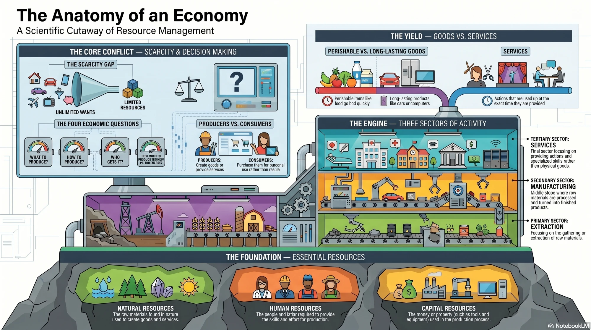

💡 Problem Case — Think Before You Read
You are a junior economics lecturer preparing your first class. You need to explain three things to your students: what goods and services are, why people play different roles in the economy, and why there is never enough of everything people want.
🤔 Discuss with a partner: Can you name three goods and three services from your daily life? What is the difference between them? Could a person be both consumer and producer at the same time?
📖 Economic Activity
Your grandparents probably never attended a class called economics. Yet, they had to think about how to meet their needs for goods and services. Today's world is more complex. A knowledge of economics — the study of how people and countries use their resources to produce, distribute, and consume goods and services — is important to everyone now.
Even before people start school, they make two very important economic discoveries. They find that there are lots of things in the world they want. They also find that they cannot have them all. There is a big gap between what they want and what they can have. Later, they learn that there are thousands of things they or their parents could buy. Gradually, they settle into two major economic roles: consumer and producer.
In the role of consumer, a person buys goods and services for personal use, not for resale. Consumer goods are products — such as food, clothing, and cars — that satisfy people's economic needs or wants. Some consumer goods, such as food, do not last a long time — these are perishable goods: goods which cannot be stored for any length of time without going bad. Other goods, such as furniture, cars or computers, last longer — these are durable goods. Services are actions, such as haircutting, cleaning or teaching. Services are used up at the time they are provided.
A producer makes the goods or provides the services that consumers use. In order to produce something, a person must first have the right resources — the materials from which goods and services are made. There are three kinds: human resources (people), natural resources (raw materials), and capital resources (money or property). If any of these resources is missing, production will stop.
No economy has an unlimited supply of resources. In other words, there is a scarcity of resources. Scarcity is the situation that exists when demand for a good, service, or resource is greater than supply. Human wants tend to be unlimited, but human, natural, and capital resources are, unfortunately, limited.
Economies are engaged in three sectors of activity: extraction of raw materials (primary sector), manufacturing (secondary sector), and services (tertiary sector). Every group of people must solve basic economic problems: What goods and services will be produced? How will they be produced? Who will get them? How much will be produced for now and how much for the future?
The answers to these questions depend on a country's human, natural, and capital resources, and also on its customs and values. Each country will answer these questions in a different way.
🎧 Listen to the Text
Audio recording of the lesson text
🏗 Task 1 — Match Paragraphs to Functions
Match each paragraph of the Reading text (Paragraphs 2–6) to its main function (A–E). Paragraph 1 (introduction) and Paragraph 7 (conclusion) are not included. The paragraphs are numbered in the Reading tab.
Scoring: +3 points for each correct match (5 matches, maximum 15). Only your best attempt counts.
B. The fundamental economic problem: unlimited wants and limited resources (scarcity)
C. How the economy is divided into sectors and the four basic economic questions
D. The types of consumer goods (perishable and durable) and what services are
E. What resources are and why all three types are needed for production
🏗 Task 2 — Build the Logical Chain
Fill in the three missing steps in the economic chain.
Scoring: up to 3 points per step (maximum 9). 3 points = at least 4 words and a key term from the text; 1 point = at least 4 words but no key term; 0 = fewer than 4 words. Only your best attempt counts.
🏗 Task 3 — Cause & Effect
Complete each cause-and-effect chain using information from the text.
Scoring: up to 3 points per item (maximum 9). 3 points = at least 4 words and 2 or more key terms; 2 points = at least 4 words and 1 key term; 1 point = at least 4 words, no key term; 0 = fewer than 4 words. Only your best attempt counts.
📚 Professional Glossary
🃏 Vocabulary Flashcards
Click a card to flip and see the Russian translation. Flashcards are for practice and are not scored.
📝 Vocabulary Categorisation
Sort the 26 glossary terms into three categories of your own choosing. Label each column.
Note: some terms may belong to more than one category. Write one term per line (or separate terms with commas) exactly as in the glossary.
Scoring (maximum 12): up to 8 points for the share of the 26 glossary terms you list (each term is counted once, so repeats do not add points); 2 points if all three categories have names, 1 point for two names; 2 points if all three columns contain at least 2 glossary terms, 1 point if two columns do. Only your best attempt counts.
✏️ Fill in the Blanks
Complete each sentence with the correct term from the glossary.
Scoring: +3 points for each correct blank (8 blanks, maximum 24). Spelling must be exact; capital letters do not matter. Only your best attempt counts.
✍️ Writing Tasks
Scoring: each task is marked on two parts. Length: full length points at the target number of words (30 words for Tasks 1–2, 50 words for Task 3), half of them at half the target, none below that; length points are given only if the answer uses at least 2 key terms. Key terms: 1 point for every 2 different key terms you use, up to 2 points. Maximum: Task 1 = 5, Task 2 = 5, Task 3 = 6 (total 16). Only your best attempt counts.
🎤 Speaking Plan
Prepare your answers. Use vocabulary from the glossary.
What is the difference between a consumer and a producer? Can one person be both? Give an example.
Why does scarcity exist in every economy? What happens when demand exceeds supply?
Describe the three sectors of economic activity. Give one example of a job in each sector.
What are the four basic economic questions? Why might different countries answer them differently?
🎤 Speaking Task — 60 Seconds
Scoring of the script (maximum 8): 8 points = at least 5 key terms and 50 words; 5 points = at least 3 key terms and 30 words; 2 points = at least 1 key term and 10 words; otherwise 0. The timer and the self-score slider are for your own practice and are not counted in the total. Only your best attempt counts.
Explain the concept of scarcity to a first-year student. Use at least 5 glossary terms. You have 60 seconds. Write your script, then practise aloud using the timer.
🌟 Self-Reflection
Rate your confidence with each learning outcome. Add notes on what to review.
🖼 Infographics

Complete tasks to earn points!
How scoring works: every task is checked automatically by the rules below. You can press Check as many times as you like, and the best result for each task is kept. Flashcards, the timer, the speaking self-score and the self-reflection are practice only and are not scored.